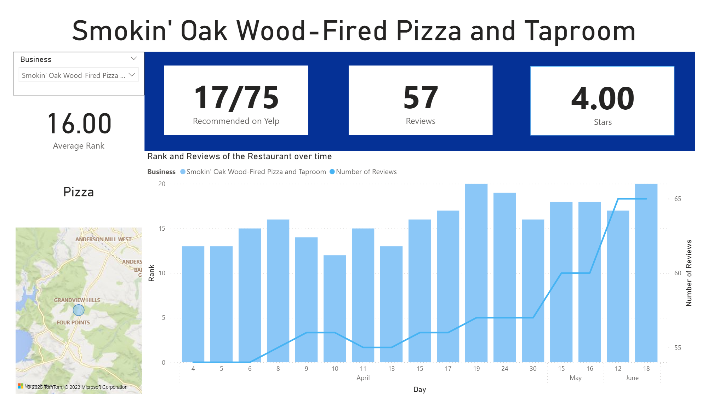

March - June 2023
Yelp Data Analysis
Using Python and Power BI, I created a script to collect data from Yelp each day with restaurants local to Austin, TX, then analyzed the data with a dashboard investigating Yelp's
ranking system, possible hot locations within the area and favorite foods of Austinites.

A favorite personal project of mine, I collected fresh data from Yelp to perform analysis in Power BI. To do this, I wrote a Python script to collect data from Yelp each day,
using windows task manager to run the script every time I turned on the computer. To make things easier as I collected more data, I wrote another script to aggregate the data into
one full csv file. I also collected the data in postgreSQL to have a second copy. I then exported to Power BI and created a dashboard for analysis on Yelp's ranking system and
other possible results. The code for this project is available on Github. Showing dashboards
from Power BI is more difficult, but there is a .pbit file in that repo. I also wrote a short Medium article on the project.
The image above is one of the dashboards created with the data. The user can select a specific restaurant, see it's location, the amount of times it was rated, reviewed and it's average rating.
There is also time series plot of it's rank and review count.